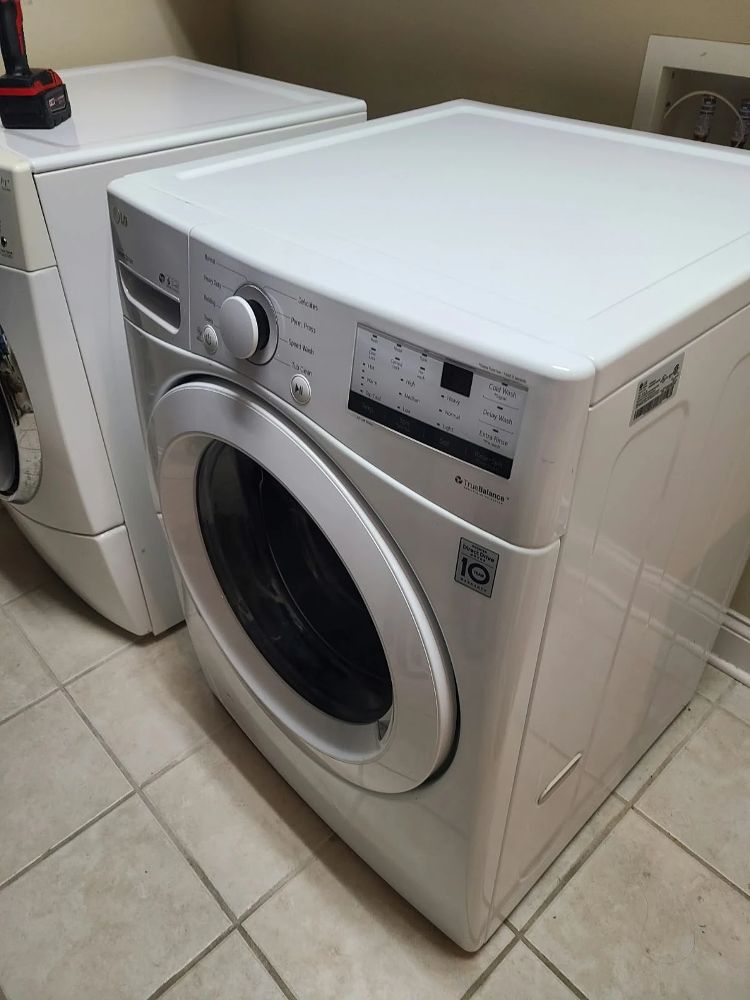
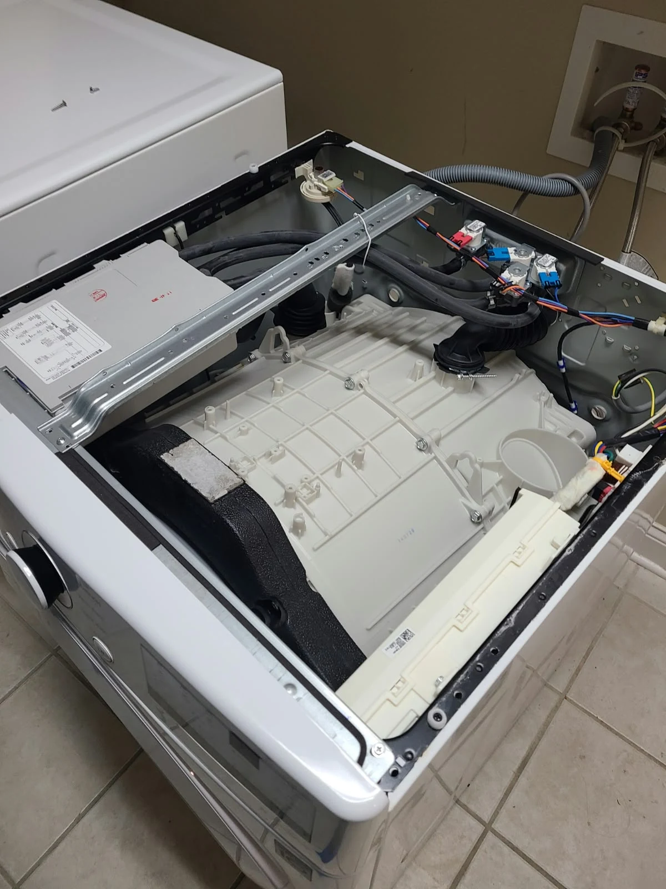
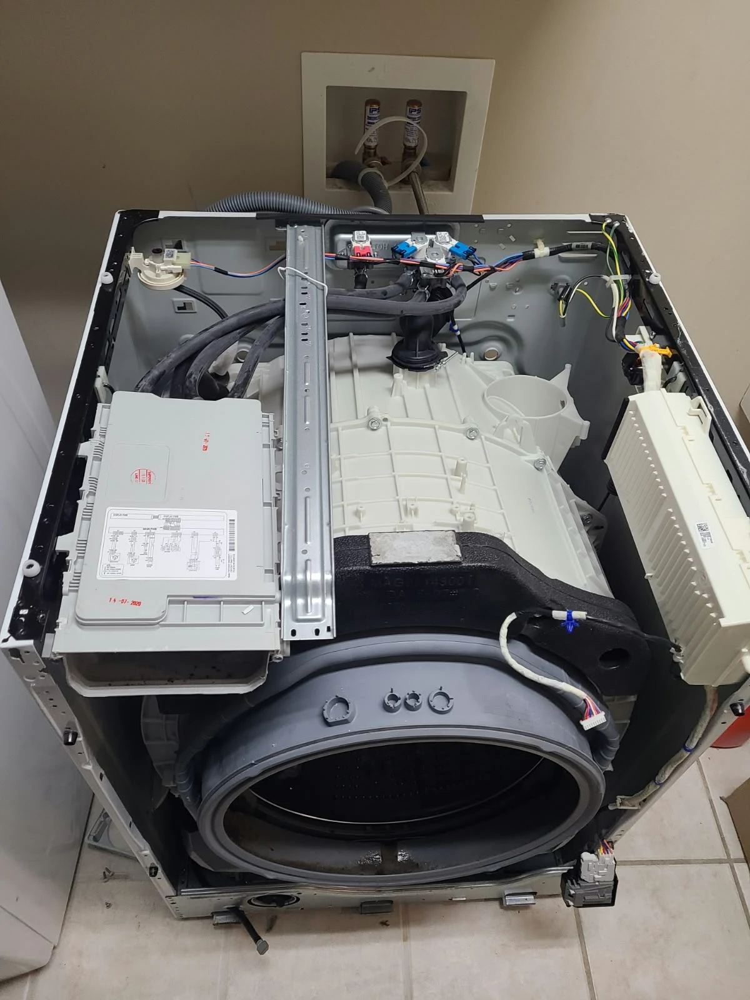
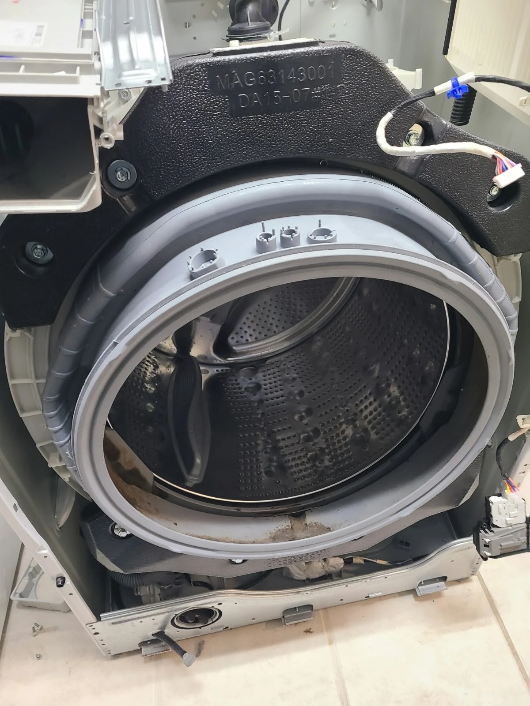
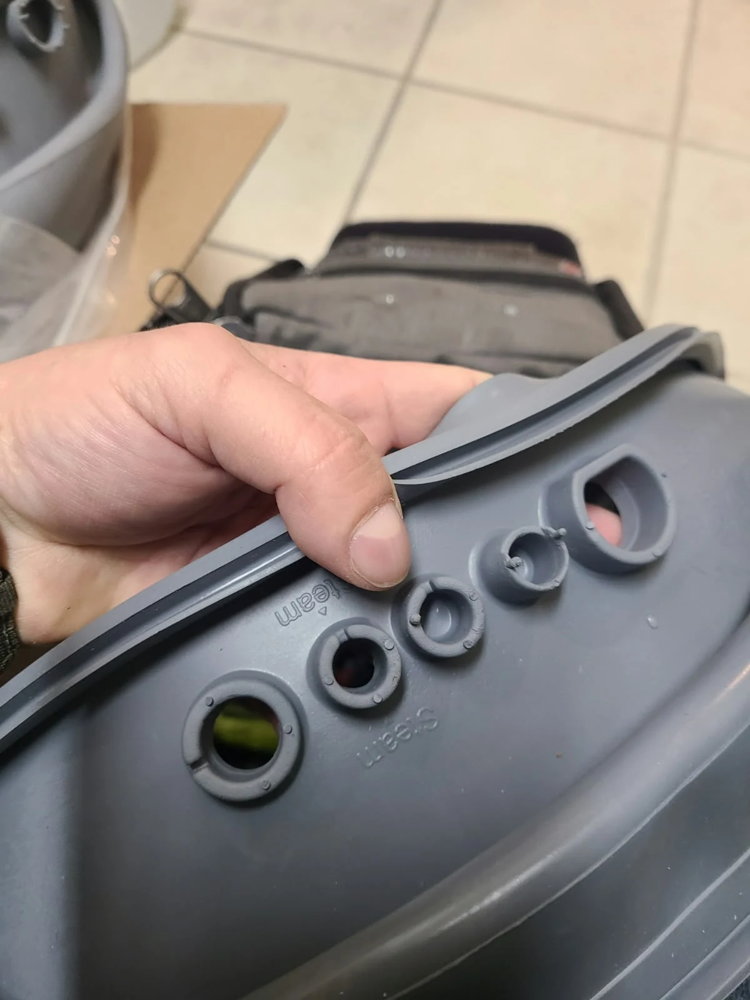
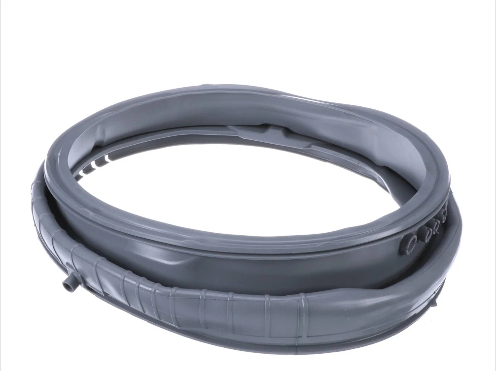

An LG Washer Door Seal Repair in Carmel
This service visit in Carmel, Indiana, involved replacing the door boot gasket on an LG WM3400CW front-load washing machine. The flexible rubber seal surrounds the loading opening, between the washer tub and the front of the cabinet. It is also commonly called a door gasket, door seal or washer boot.
Alex Appliance Repair completed the gasket replacement and tested the washer afterward. No water leaks were found, and the machine operated properly. The photographs below document the actual appliance and access stages during the work.
A front-load washer seal has more to it than the visible rubber lip inside the door. Its folds, attachment surfaces and molded connections extend behind the front panel. This photo story follows that area of the washer as it became accessible during the repair.
Confirming the Washer Model
The appliance label identifies this washer as LG WM3400CW. The image is an unretouched crop from the original label photograph, focused on the model field so that it remains readable without the surrounding phone-screen interface.
Model identification matters when arranging a door boot replacement. Similar-looking LG front-load washers can use different seals. The appliance label provides a more dependable starting point than the exterior appearance of the machine or the name printed on its control panel.
When requesting service for your washer, provide the model and describe what you have observed around the door. A clear label photograph helps identify the appliance before a replacement component is selected.

Opening the Washer for Access
The service photographs show the top panel removed, exposing the upper tub area, hoses and internal assemblies. This view records an access stage in the gasket replacement while the washer was still positioned in the laundry room.
The seal cannot be understood fully from the closed-door exterior. Access around the tub opening makes its attachment and surrounding components visible. In this job, the photo sequence continues from the opened top to the exposed front of the machine.
The documented repair concerned the door boot gasket. The internal components visible in these photographs provide context for where the work took place; their appearance in the photo does not indicate that they were replaced.
Access Around the Door Boot Gasket
With the front panel removed, the circular gasket and stainless-steel drum opening are visible together. The wider photograph shows the access available around the tub; the closer view shows the seal at the loading opening. Both photographs were taken during this Carmel repair.


The gasket bridges the opening between the tub assembly and the front cabinet. Its position and shape explain why replacing it involves access behind the washer front, beyond the portion that is normally visible when loading laundry.

A Closer Look at the Rubber Seal
The hand-held photograph shows the gasket edge and several molded openings during service. These details help explain the component’s shape and how much of the seal is normally hidden inside the cabinet.
The boot includes folds as well as an outer sealing surface. Correct fit involves the entire component, including its mounting areas and applicable connections, rather than only the visible lip around the door glass. The supplied assembly diagram in the Visit Overview locates the gasket within the washer.
The work completed on this LG washer was replacement of the door boot gasket. After the repair, the washer was tested, no water leaks were detected, and normal operation was confirmed.

The Replacement Component and Completed Repair
The supplied product reference shows the overall form of a door boot gasket away from the washer. It is a component reference, while the other photographs document access and gasket details on the actual appliance during the service visit.
The replacement restored the door-seal assembly on this LG WM3400CW. Following the work, testing confirmed that the washer operated properly without water leaks. That post-repair check is the recorded outcome of this Carmel service.
A similar-looking seal on another washer should still be matched to that appliance’s model. For a service estimate, the exact model and the condition found during inspection determine which component and work are needed.
Door Gasket Care Between Service Visits
LG’s front-load washer maintenance guidance recommends cleaning the gasket surface and door glass to remove hair and lint that can interfere with a proper seal. Follow the instructions for your appliance when choosing cleaning products and caring for the rubber folds.
Routine cleaning and component replacement address different needs. Cleaning removes surface debris; it does not replace an inspection when the seal appears damaged or water is escaping around the door. If you notice moisture, describe where it appears and when in the cycle you see it. Those observations help communicate the concern when arranging service.
Questions About LG Washer Door Seal Replacement
What is a door boot gasket?
It is the flexible rubber component around the loading opening of a front-load washer. Door seal, door gasket and washer boot are common names for the same type of component.
Which LG washer was repaired?
This repair involved model WM3400CW in Carmel, Indiana. The original model-label crop is included above.
Was the washing machine tested after replacement?
Yes. The washer was tested after the door boot gasket was replaced. No water leaks were found, and the machine operated properly.
Does water near a washer door always mean the gasket needs replacement?
A wet area alone is not enough to identify the repair. Inspection should establish the source before recommending a component. LG also identifies debris on sealing surfaces as something to check in its maintenance guidance.
How much does a door boot gasket replacement cost?
The estimate depends on the washer model and the required work. Contact us with the model and your observations so the repair can be evaluated for your appliance.
Schedule LG Washer Repair in Carmel
For help with a washer door seal or another washing-machine concern, contact Alex Appliance Repair for washer repair in Carmel, Indiana. Share your model and a short description of the issue when requesting service.
Learn about our LG appliance repair services, view Carmel service coverage, or browse more repair stories with original photographs. Alex Appliance Repair is an independent appliance repair service operated by Aksenov LLC.
Call (463) 248-8429 or request an appointment online.
Book washer repair in Carmel